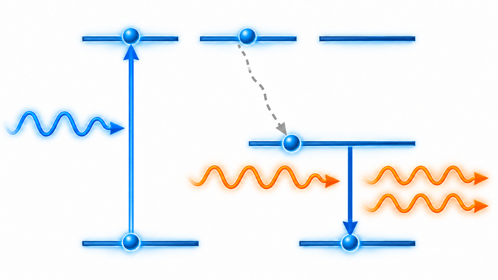
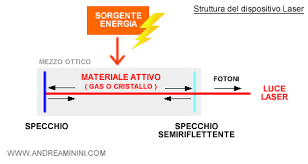
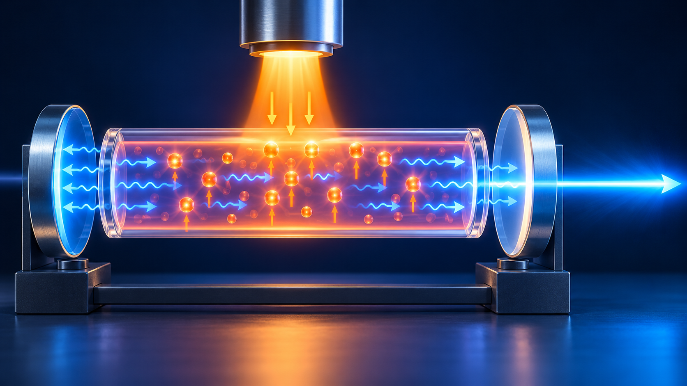
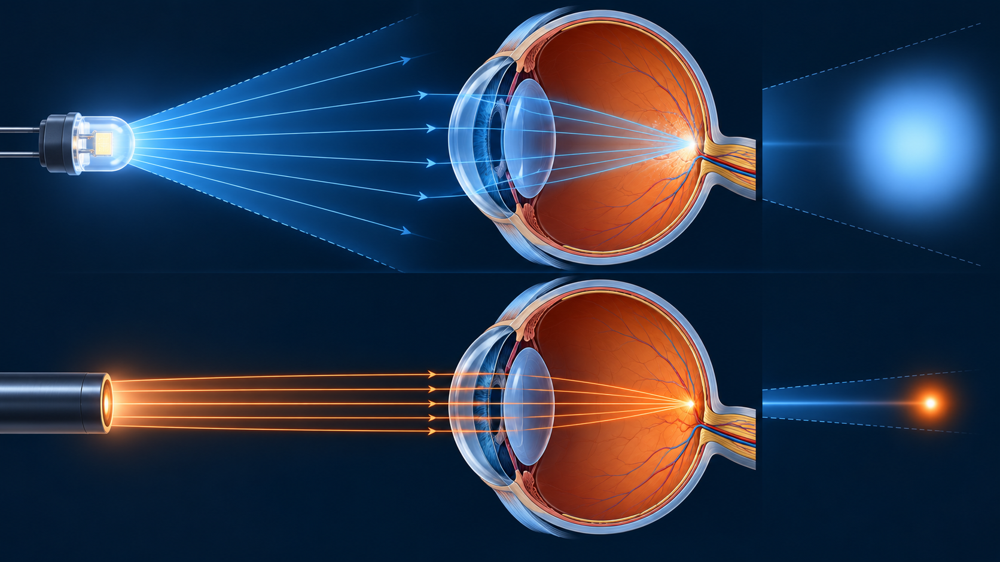

Obiettivi
- Distinguere emissione spontanea, stimolata e assorbimento.
- Spiegare pompaggio, inversione di popolazione e guadagno.
- Descrivere il ruolo della cavità e della soglia.
- Riconoscere divergenza, larghezza spettrale e coerenza finite.
- Collegare caratteristiche del fascio, applicazioni e rischi.
Come funziona un laser, in generale?
Livello intuitivo: Prima forniamo energia a un materiale, poi favoriamo l’amplificazione della luce in alcuni modi. In molti laser, gli specchi fanno attraversare più volte il materiale alla luce. Una parte esce come fascio utile. Materiale, alimentazione e cavità determinano le caratteristiche del fascio.
Per essere maggiormente rigorosi: Il pompaggio prepara il mezzo attivo, l’emissione stimolata fornisce guadagno e la cavità dell’oscillatore seleziona i modi. Quando il guadagno compensa le perdite, si raggiunge la soglia di oscillazione. Il laser può essere continuo o impulsato; direzionalità, larghezza spettrale e coerenza sono finite e dipendono dall’apparato.
Emissione stimolata
Come si amplifica la luce?
Livello intuitivo: Un sistema eccitato contiene energia. La luce adatta può indurlo a cederla al campo luminoso già presente, aumentando la luce in quel modo.
Per essere maggiormente rigorosi: L’emissione stimolata aggiunge energia al modo ottico stimolante, con la sua frequenza, direzione, fase e polarizzazione. Nell’emissione spontanea il processo non richiede quel campo stimolante. L’assorbimento compie il processo opposto, trasferendo energia dal campo al sistema.
Pompaggio e inversione di popolazione
Livello intuitivo: Per amplificare, dobbiamo continuamente fornire energia al materiale. Non basta collocare due specchi attorno a una sorgente qualsiasi.
Per essere maggiormente rigorosi: Il pompaggio ottico, elettrico o di altro tipo prepara una distribuzione di popolazione che dia guadagno netto sulla transizione. Nei modelli a tre e quattro livelli, l’inversione riguarda i livelli laser, con attenzione alle degenerazioni. I livelli di pompaggio e di emissione non devono essere confusi. Un semplice sistema a due livelli in equilibrio non fornisce l’inversione richiesta.

Cavità e soglia
Perché la luce passa più volte nel mezzo?
Livello intuitivo: Gli specchi rimandano una parte della luce attraverso il materiale, permettendo ulteriori amplificazioni. Un elemento parzialmente trasmittente lascia uscire il fascio utile.
Per essere maggiormente rigorosi: Una cavità risonante seleziona modi compatibili con geometria e guadagno. Nell’oscillatore laser l’oscillazione nasce quando il guadagno per giro compensa le perdite. Pompaggio, guadagno, perdite e accoppiamento d’uscita determinano la soglia. Esistono configurazioni diverse dal semplice schema lineare a due specchi.


Proprietà reali del fascio
Direzionalità e divergenza
Livello intuitivo: Un fascio laser può allargarsi molto meno di quello di una sorgente comune, ma si allarga comunque. Un punto molto stretto non rimane infinitamente stretto durante la propagazione.
Per essere maggiormente rigorosi: Apertura finita e diffrazione impongono divergenza. Qualità del fascio, struttura modale e ottiche determinano il profilo. Coerenza temporale e spaziale sono proprietà diverse e hanno estensione finita.

Spettro
Livello intuitivo: Molti laser concentrano l’emissione in una banda ristretta, ma “laser” non significa un unico colore matematicamente perfetto.
Per essere maggiormente rigorosi: Larghezza di linea e modi longitudinali dipendono da cavità, mezzo e stabilità. Anche impulsi brevi possono richiedere una banda spettrale significativa. La scelta della sorgente dipende dalla proprietà necessaria all’applicazione.
Luce laser e tessuti: il ruolo dei cromofori
Perché alcuni tessuti assorbono più di altri?
Livello intuitivo: Un cromoforo è una componente che assorbe luce. Melanina, emoglobina e acqua assorbono in modo diverso al cambiare della lunghezza d’onda. Anche i pigmenti dei tatuaggi possono comportarsi da bersagli ottici.
Per essere maggiormente rigorosi: La selettività dipende dal contrasto di assorbimento fra bersaglio e strutture circostanti. Scegliere la lunghezza d’onda favorisce un’interazione, ma non rende automaticamente trasparenti tutti gli altri tessuti. Diffusione, profondità e assorbimenti concorrenti restano importanti.
Come si limita il danno circostante?
Livello intuitivo: Si cerca di depositare energia dove serve e nel tempo adatto, evitando che si diffonda troppo alle zone vicine. Posizione del fascio, durata degli impulsi e raffreddamento contribuiscono al controllo.
Per essere maggiormente rigorosi: Nella fototermolisi selettiva, assorbimento e durata dell’impulso rispetto ai tempi di rilassamento termico del bersaglio sono determinanti. Il principio mira a limitare il danno collaterale, non a garantirne l’assenza. Altri laser agiscono per fotoablazione o fotodisruzione: non tutte le applicazioni sono spiegate dalla sola fototermolisi. I parametri operativi richiedono una valutazione clinica e non vengono ricavati da questa lezione.
Applicazioni terapeutiche agli occhi
Chirurgia refrattiva
Livello intuitivo: Modificare la forma della cornea cambia la deviazione della luce e quindi il potere ottico. Tecniche diverse lavorano su strati e con modalità differenti.
Per essere maggiormente rigorosi: Nelle procedure come PRK e LASIK, il laser a eccimeri rimodella il tessuto per fotoablazione. Il femtosecondo può creare piani di separazione corneali tramite effetti focalizzati; in procedure come SMILE consente la preparazione di un lenticolo. Questi meccanismi non sono semplicemente riscaldamento di un pigmento. Indicazioni, rischi e risultato dipendono dal paziente e dalla tecnica.
Retina, capsula e altre strutture
Livello intuitivo: In alcune applicazioni si producono effetti termici localizzati; in altre si apre o separa una struttura con impulsi focalizzati. Il bersaglio cambia con il trattamento.
Per essere maggiormente rigorosi: La fotocoagulazione retinica sfrutta assorbimento e riscaldamento controllato. La capsulotomia Nd:YAG per opacizzazione capsulare posteriore utilizza fotodisruzione. Esistono anche trattamenti laser del glaucoma con bersagli e meccanismi specifici. Nessuna di queste applicazioni è una procedura priva di rischio.
Cancellazione dei tatuaggi
Livello intuitivo: Il laser può frammentare pigmenti del tatuaggio, che vengono poi rimossi gradualmente attraverso i processi biologici dell’organismo. Colori differenti possono rispondere a sorgenti differenti.
Per essere maggiormente rigorosi: I trattamenti impiegano impulsi brevi e interazioni fototermiche e fotoacustiche. Assorbimento, composizione e profondità del pigmento condizionano la risposta. Possono servire più sedute e più lunghezze d’onda. Sono possibili rimozione incompleta, alterazioni della pigmentazione e cicatrici: la selettività limita alcuni rischi senza annullarli.
OCT: la luce per osservare, non per trattare
Che cosa mostra?
Livello intuitivo: L’OCT costruisce sezioni ottiche dei tessuti, un po’ come una mappa dei diversi strati. Nell’occhio aiuta a osservare retina e altre strutture senza rimuoverle.
Per essere maggiormente rigorosi: La tomografia a coerenza ottica misura segnali ottici retrodiffusi tramite interferometria. L’informazione in profondità deriva dalle differenze di cammino ottico e dalla banda spettrale. Non è una radiografia e non usa il meccanismo distruttivo dei laser terapeutici.
L’OCT usa sempre un laser?
Livello intuitivo: No: ciò che conta è una sorgente adatta alla misura. Alcuni strumenti usano sorgenti a banda larga; altri un laser che cambia lunghezza d’onda durante la scansione.
Per essere maggiormente rigorosi: Nell’OCT spettrale si impiegano spesso diodi superluminescenti; nello swept-source OCT si usano laser sintonizzabili. “Diagnostica ottica” e “trattamento laser” sono quindi ambiti distinti. In una scansione OCT, gli effetti collaterali da danno termico non sono il risultato ricercato.
Altre applicazioni
Livello intuitivo: I laser servono anche per comunicare in fibra, misurare distanze e lavorare materiali. La proprietà utile dipende dal compito.
Per essere maggiormente rigorosi: Si scelgono spettro, potenza, durata, coerenza e geometria in relazione all’interazione desiderata. La sorgente usata per una misura non è intercambiabile con quella di un trattamento.
Riferimenti per le applicazioni
- Anderson e Parrish: fototermolisi selettiva
- FDA: laser medicali
- FDA: principi della LASIK
- FDA: rimozione dei tatuaggi
- National Eye Institute: tomografia a coerenza ottica
Sicurezza
Livello intuitivo: Un fascio non deve essere diretto verso gli occhi. Anche i riflessi e la luce invisibile possono essere pericolosi. Quanto sembra luminoso non indica in modo affidabile quanto è rischioso.
Per essere maggiormente rigorosi: Il rischio dipende da lunghezza d’onda, potenza o energia, durata, geometria ed esposizione. La classificazione e le misure di protezione richiedono una valutazione specifica. Occhiali comuni o filtri scelti a caso non sono protezioni laser. Questa lezione spiega i principi e non fornisce una procedura operativa per l’uso di apparati.